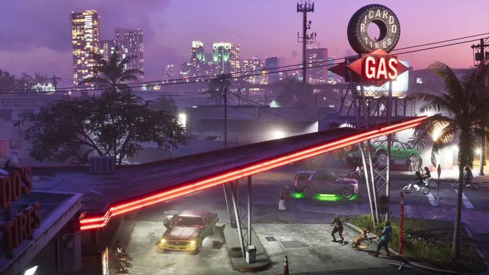

GTA 6 won't load or start: what to try on PS5 and Xbox
Short answer
First check PlayStation Network or Xbox status: PSN had sign-in trouble the day before launch. Then update your console software and make sure you have enough space and the license downloaded.

1. Check whether the service is down
On November 18, roughly 1 to 3:15 p.m. ET, PlayStation Network had sign-in problems, according to Newsweek and XDA, and its status page warned of trouble launching games. Before changing anything, check:
Launch-day PSN problems have their own page: PSN down at GTA 6 launch.
2. Update your console
Make sure you're on the latest system software. On Xbox, check for console updates too.
3. Check space and the download
Rockstar says you need up to 212 GB free depending on your console. The physical edition has no disc: you redeem the code and download the full game. PlayStation codes are region-locked; Xbox codes aren't.
4. Error WS-116449-5 on PS5
PlayStation's error code list says it means the service is currently under maintenance. Wait a while, check your connection and restart your router.
5. If nothing works
Rockstar's GTA VI help center lets you submit a request. For store or console problems, use PlayStation or Xbox support. Forbes reported updates on November 13 and 16, and no day-one patch had been announced as of November 16. See GTA 6 patches.
Sources
- Newsweek: PlayStation users report access issues hours before GTA VI launch
- XDA: PlayStation Network is down as GTA 6 launches
- PlayStation: PS5 error codes
- Forbes: GTA 6 release time, download size and updates (Nov 16, 2026)
- Rockstar Support: GTA VI installation requirements
- Rockstar Support: GTA VI platforms, editions and versions
- Rockstar Support: GTA VI help center
Written by Six Stars from the sources above, checked on November 20, 2026. Spot a mistake? Tell us via About us.